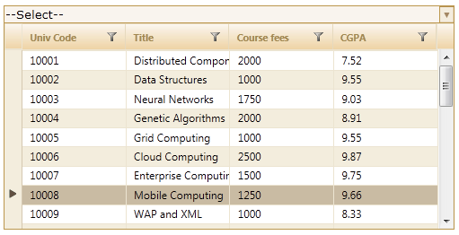
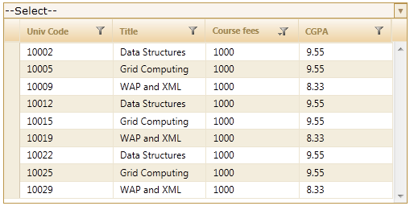

The filtering technique can be incorporated into the MultiColumnDropDown control in MVC by the following two ways using the server mode:
Through View
|
[ASPX]
<%=Html.Syncfusion().MultiColumnDropDown<Student>("MultiColumnDropDown") .Datasource((IEnumerable) ViewData["data"]) .DisplayExpression(new int[] {2, 3, 5}) .Width(500) .AllowFiltering(true) .Text("--Select--") %>
|
|
[Razor]
@(new HtmlString(Html.Syncfusion().MultiColumnDropDown<Student>("Multicolumndropdown") .Datasource((IEnumerable) ViewData["data"]) .DisplayExpression(new int[] {2, 3, 5}) .Width(500) .AllowFiltering(true) .Text("--Select--")
))
|
1. Set its data source and render the View.
|
Controller /// <summary> /// Used for rendering the MultiColumnDropDown initially. /// </summary> /// <returns>View page; it displays the MultiColumnDropDown.</returns> public ActionResult Index() { var Data = new StudentDataContext().AutoFormatStudent.Take(200); ViewData["data"] = Data; return View(Data); } |
2. In order to work with filtering actions, create a Post method for Index actions and bind the data source to MultiColumnDropDown as in the following code:
|
Controller
[AcceptVerbs(HttpVerbs.Post)] public ActionResult Index (PagingParams args) { IEnumerable data =new StudentDataContext().AutoFormatStudent.Take(20); return data.GridActions<Student>(); } |
3. Run the application. The MultiColumnDropDown control will appear as shown below:

Figure 330: Filtering Enabled MultiColumnDropDown Control

Figure 331: “Course Fees” Column Filtered
Through MultiColumnDropDownModel
To filter in server mode using MultiColumnDropDownModel:
1. Create a model in the application
2. Create a MultiColumnDropDown control in the view.
|
[ASPX] <%=Html.Syncfusion().MultiColumnDropDown<Student>("Multidropdown",(MultiColumnDropDownModel) ViewData["dropdown"]) %> |
|
[Razor] @(new HtmlString(Html.Syncfusion().MultiColumnDropDown<Student>("Multidropdown", (MultiColumnDropDownModel) ViewData["dropdown"]))) |
3. Create an instance for MultiColumnDropDownModel and assign Datasource to the model.
|
Controller // Create instance to MultiColumnDropDownModel and assign properties. MultiColumnDropDownModel dropdown = new MultiColumnDropDownModel() { Datasource = new StudentDataContext().JSONStudent.Skip(0).Take(30).ToList(), Text = "--Select--", DisplayExpression = new int[3] { 2, 3, 5 }, Width = 500 };
|
4. Enable/disable the filtering feature using the AllowFiltering property.
|
Controller // Create instance to MultiColumnDropDownModel and assign properties. MultiColumnDropDownModel dropdown = new MultiColumnDropDownModel() { Datasource = new StudentDataContext().JSONStudent.Skip(0).Take(30).ToList(), Text = "--Select--", DisplayExpression = new int[3] { 2, 3, 5 }, Width = 500, AllowFiltering = true };
|
5. Pass the model to View using ViewData().
|
Controller // Pass the MultiColumnDropDownModel to the view using ViewData() ViewData["dropdown"] = dropdown; |
6. In order to work with filtering actions, create a Post method for Index actions and bind the data source to MultiColumnDropDown as shown in the following code.
|
Controller
[AcceptVerbs(HttpVerbs.Post)] public ActionResult Index (PagingParams args) { IEnumerable data =new StudentDataContext().AutoFormatStudent.Take(20); return data.GridActions<Student>(); } |
7. Run the application. The MultiColumnDropDown control will appear as shown below:
Figure 332: Filtering Enabled MultiColumnDropDown Control
Figure 333: “Course Fees” Column Filtered